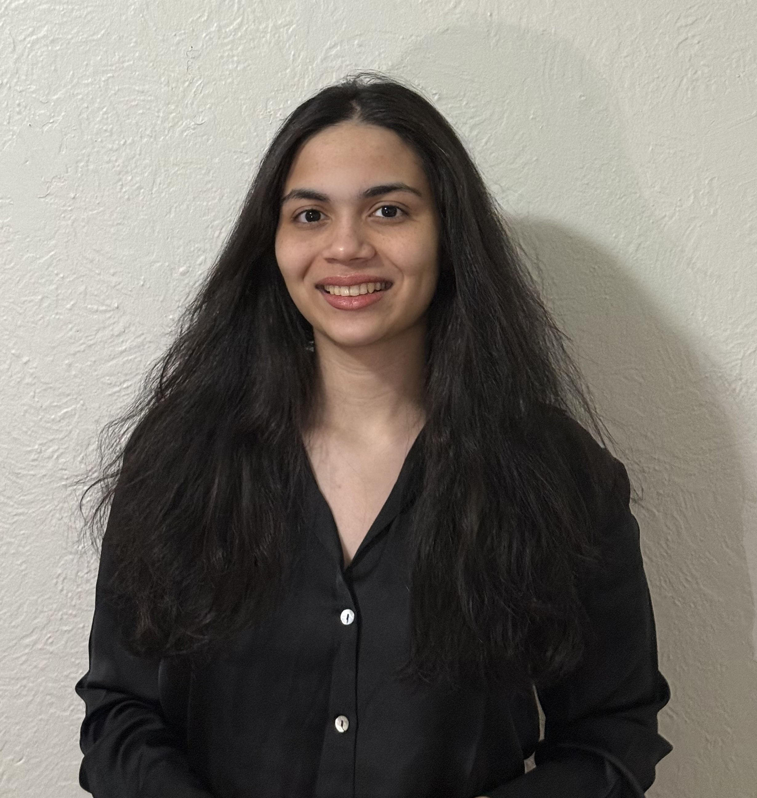

About Me

I'm an aspiring Data Scientist with a strong foundation in Computer Science and a passion for creativity and innovation. Currently pursuing my Master's in Data Science at Northeastern University's Khoury College of Computer Sciences.
Beyond the terminal, I'm drawn to the visual side of things — I love editorial design, doodling, and the craft of storytelling through layout and type. I'm particularly fascinated by fintech, consumer analytics, and predictive modeling, where data shapes how people experience products and brands.
 600+ day streak in German 🇩🇪
600+ day streak in German 🇩🇪